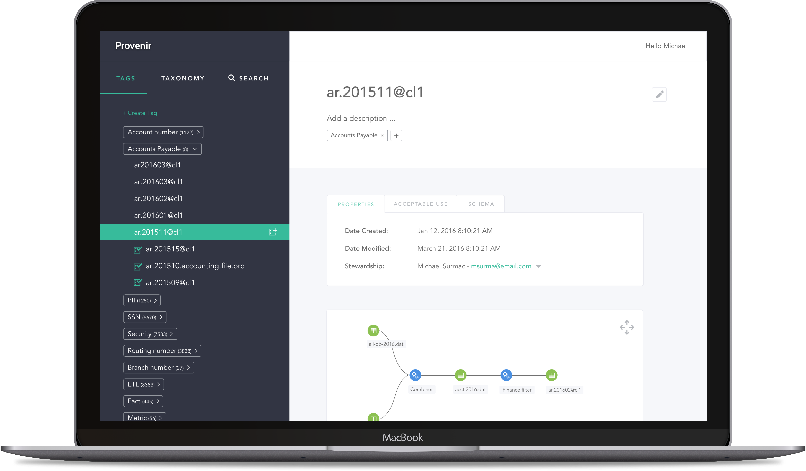
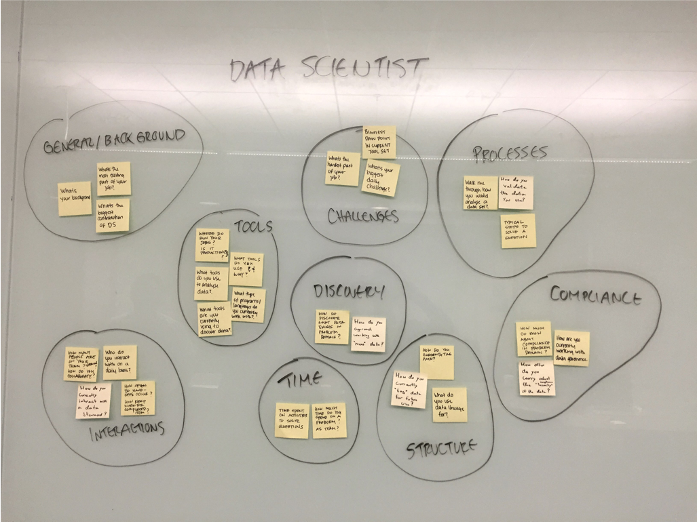

Provenir
Provenir is a tool for sorting and organizing big structures of data in order to manage data governance and accessibility. Data Scientists are currently engaged in a time consuming process of cleansing data before it can be analyzed. This cumbersome process makes it difficult to ensure quality and compliance.
For those working in government and enterprise organizations compliance is a serious issue. If information about a person is revealed that should not be it can lead to legal issues.
Our initial assumptions told us that Data Scientists need a better way to organize big data along with the ability to see the source, lineage, and owner as well as what information it contains to protect data from misuse.
User Research
In order to uncover some questions I interviewed Data Scientists and Data Engineers about their current challenges and solutions. Since the problem was pretty broad I wanted to make sure I was starting with the simplest solution that had the highest value first.
Ideation
I conducted a series of sketching exercises with the whole team so that I could start breaking down the different interpretations everyone had of how to begin solving the problems. I found a common thread amongst the group with categorization. We started with broad buckets and filtered down. We balanced automation with manual filtering to give Data Scientists more control over organization and placed a focus on lineage transparency.
We figured out we could tag data as it entered the system by using a third party tool that uses machine learning to categorize metadata. By playing with different types of filtering and continuously putting our findings in front of users, we quickly learned which types of categorization made the most sense to Data Scientists.
We also wanted to allow users to create their own tags as well as a taxonomical structure which would allow different access points to different buckets of data. This was important in making sure that PII would not be uncovered. For example, everything with the tag “Birth date” could be kept away from anything with the tag “Email address”. This way data could be analyzed safely and securely.
Design Thinking + Enablement
We were able to introduce the team to a user centered and lean approach to design, which was dramatically different than their previous waterfall methods. Provenir has been launched as an open source project and is currently being used by a number of enterprise organizations.
*Product name and content has been changed to protect the identity of the client